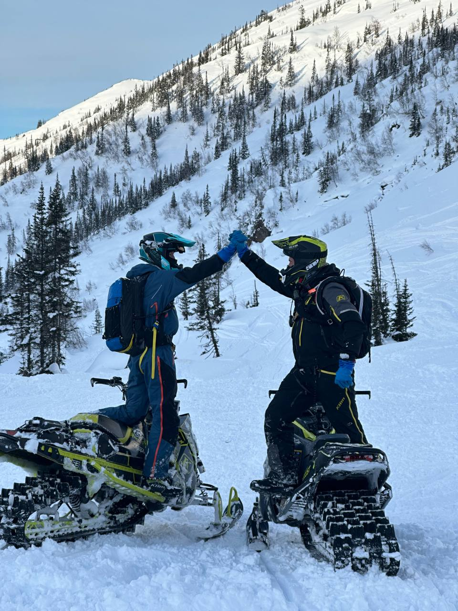

МАМАЙ-ЯРКИЙ УГОЛОК ЗЕМЛИ?
А вот это — Мамай.
Для меня это даже не точка на карте, а такое особенное состояние. Когда приезжаешь туда зимой, кажется, что попадаешь в другую реальность. Снег на Мамае достигает до 4-6 метров в глубину. На моем опыте был такой случай, когда за ночь выподало под 1.5 метра пухлого снега.
Он всё укутывает: и склоны, и могучие кедры, стоит себе под белыми шапками. Тишина оглушающая. Слышно только, как под ботинками скрипит снег, и где-то далеко-далеко птица крикнула. И вот ты идешь вверх, пыхтишь, а потом оборачиваешься — и просто дух захватывает.
Бескрайние хребты до горизонта. Чувствуешь себя букашкой, но такой счастливой и свободной букашкой на просторах этой дикой природы.
вернуться назад